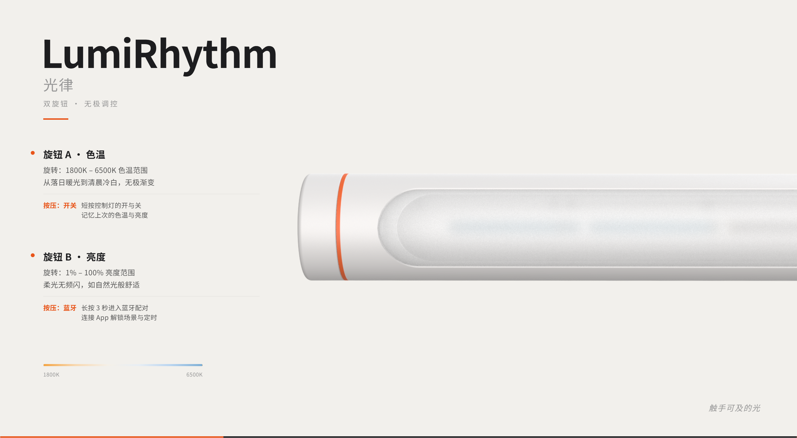
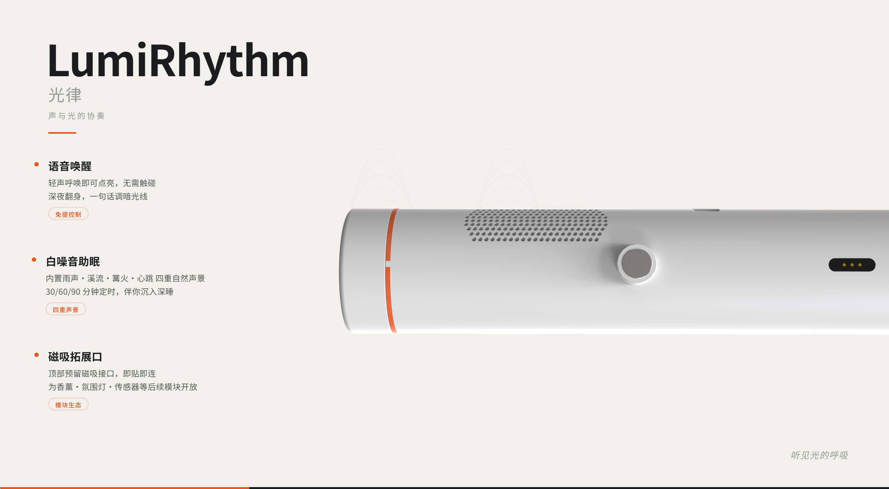
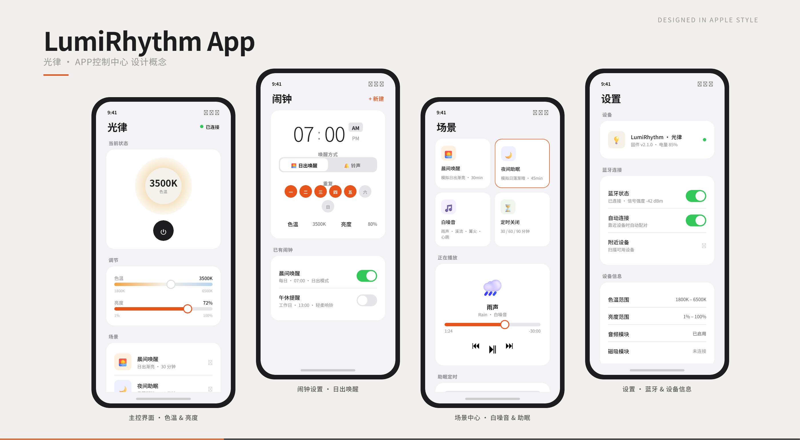
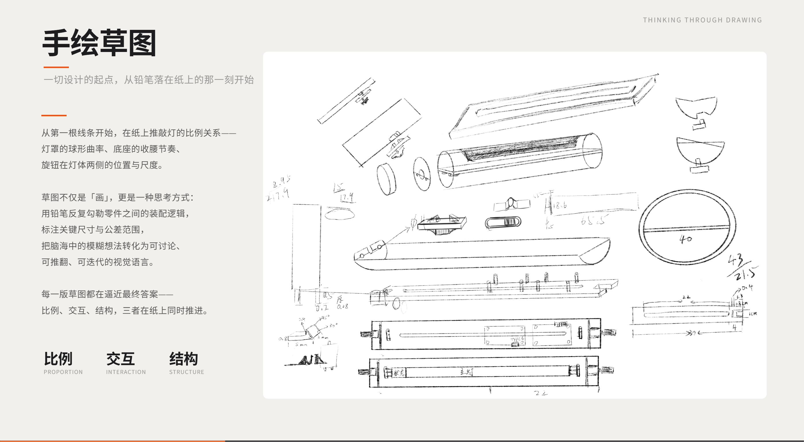
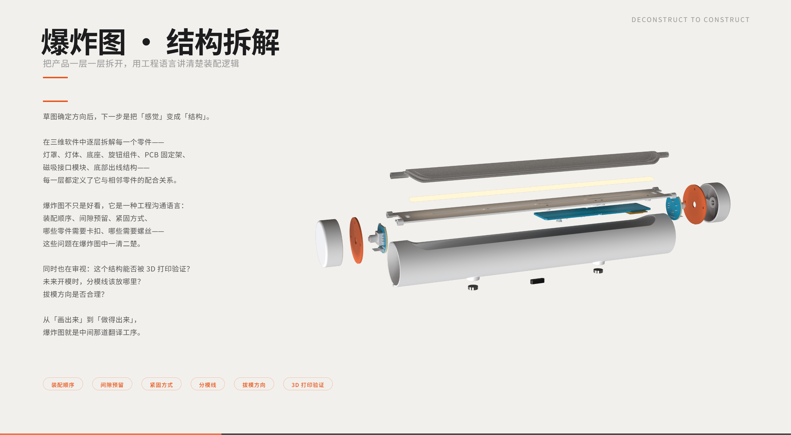
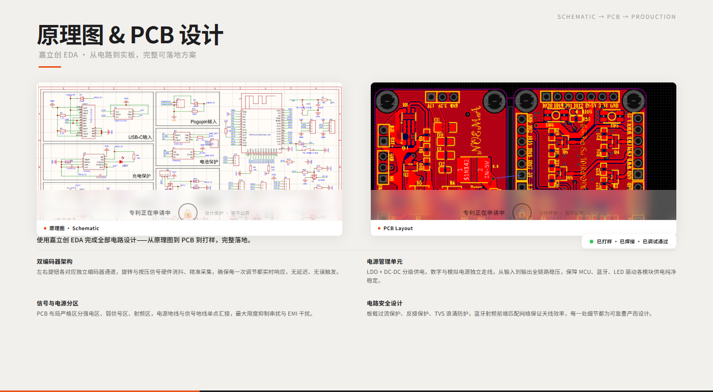

LumiRhythm 光律 · 智能唤醒助眠灯
LumiRhythm 是一款以昼夜节律（Circadian Rhythm）科学为核心的智能灯具，通过模拟日出日落的自然光变化，帮助用户规律作息、改善睡眠质量。产品设计上融合了磨砂玻璃穹顶的柔和光效、双磁吸模块的灵活组合、以及物理旋钮带来的直觉操作体验。爱马仕橙跳色细节在克制中注入张力，哑光奶油白机身让产品自然融入卧室环境。本次设计涵盖产品造型、CMF 定义、交互方式及视觉传达全流程。








项目总结
从一张草图到一块可运行的 PCB，从手绘推敲到 3D 打印手板验证——这个项目是我第一次独立走完硬件产品全流程。 工业设计、结构设计、电路设计、嵌入式开发，四个领域在同一个产品上交汇， 每一步都需要在「理想效果」与「可制造性」之间找到平衡。
以量产标准要求自己是我在这个项目中最大的收获。 从草图阶段就会思考拔模方向与分模线位置，在做爆炸图时会验证装配间隙与紧固方式， 在画 PCB 时会布局信号分区与 EMI 抑制——不是为了「做出来」，而是为了「做一万台」。 这种思维方式让我理解了设计与工程的真正关系：设计定义边界，工程把边界变成现实。
过程中最大的挑战不是单一技能的缺失，而是跨领域的决策权衡。 一个外观调整可能影响散热风道，一个元器件选型可能改变 PCB 面积从而影响整机尺寸。 我学会的不是「把每件事都做对」，而是在多个约束条件下找到最优解，并为自己的决策负责。
从嘉立创 EDA 打样的第一块板子到焊好上电、蓝牙配对成功、灯光亮起的那一刻—— 那种「自己造的轮子真的在转」的成就感，让我确信了全栈硬件设计师这条路。